第一篇博文就这样诞生了！
BlackHat Asia 2016 大会议题分析报告
1、《A New CVE-2015-0057 Exploit Technology》
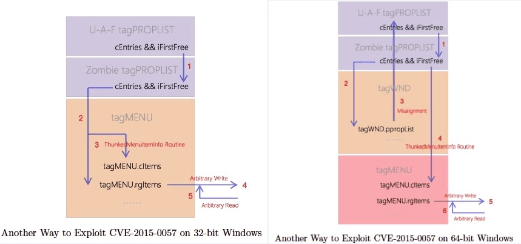
来自FireEye公司分享的一种针对微软内核 win32k!xxxEnableWndSBArrows tagSBINFO/tagPROPLIST UAF漏洞CVE-2015-0057/MS15-010的利用方法，是被FireEye捕获到的一款Dyre银行木马变种所采用的利用技术,分为32位和64位不同平台下的方法。
【传统攻击方法】：原有的攻击方法是由NCC Group安全组织公布的，采用”占坑“的攻击方式，用可控数据去填充已释放的tagPROPLIST，然后在32位下用SetScrollInfo去操作指向tagWND.strName.Buffer的tagWND.pSBInfo，而在64位下伪造的堆头结构_HEAP_ENTRY去指向tagWND.strName.Buffer，完成数据的覆盖，从而转化为任意地址读写。
【新型攻击方法】：在32位系统下，==采用tagMENU对象去填充已tagPROPLIST，然后借助tagMENU.cItems和tagMENU.rgItems来完成控制==;而在64位系统下，既借鉴了NCC使用tagWND去操作tagPROPLIST，又使用tagMENU去覆盖tagMENU.rgItems，因为rgItems数组指针指向的第一个元素是wID，通过SetMenuItemInfo()可实现完全控制,最终实现任意地址读写。
2、《Automated Detection Of Firefox Extension-reuse Vulnerabilities》
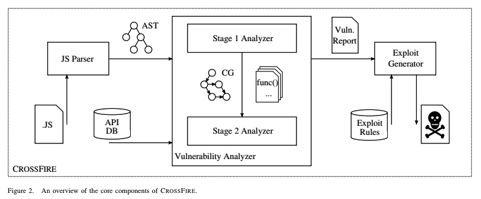
东北大学（美国）的4位安全研究员开发出一款叫CrossFire的轻量级静态分析工具，用于自动化挖掘Firefox插件漏洞（对方称为”Externsion-reuse“漏洞），其实就是利用插件原有的敏感功能去执行恶意行为，比如窃取cookie、历史记录等敏感信息。Firefox插件是通过Javascript调用Friefox提供的API实现的附加功能，因此CrossFire是通过静态分析插件的JS代码，构建出抽象语法树，然后跟收集的敏感API数据库做综合分析，API数据库就是定义输入源（source）和输出目标（sink）的内容，然后基于污点传播的思路去做判断，如果检测到漏洞还可以根据原定规则生成exploit。
【PS】:==基于污点传播的静态分析思路，偏学术研究，估计误报会比较多，往往还需要人工介入排查，效果不见得会很好。==
3、《Break Out Of The Truman Show：Active Detection And Escape Of Dynamic Binary Instrumentation》
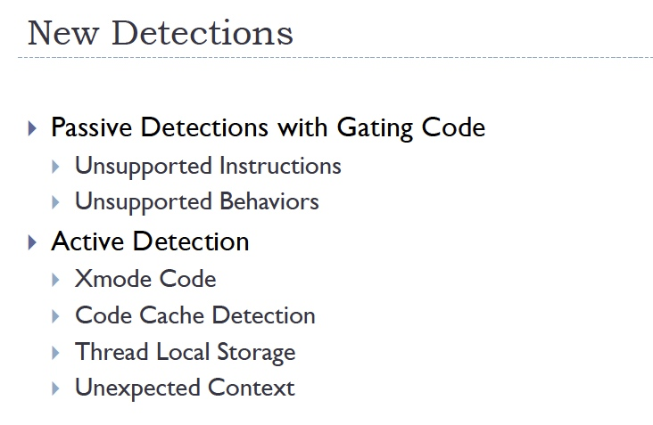
关于动态二进制插桩的检测与逃逸方法，用来对抗程序被动态分析,主要针对PIN与DynamoRIO两款插桩工具的特点进行分析。
【检测方法】：分主动与被动检测方案，主动检测包括扩展的指令代码（Xmode Code，会导致栈桢大小不同）、代码缓存、TLS和异常上下文，而被动检测包括未支持的指令和行为功能。
【逃逸方法】：通过代码缓存进行自修改，以及一些栈、TLS和其它DBI框架特有的数据结构，比如.charmve段、BrokerClient回调函数等等方法入手。
4、《Bypassing Browser Security Policies For Fun And Profit》
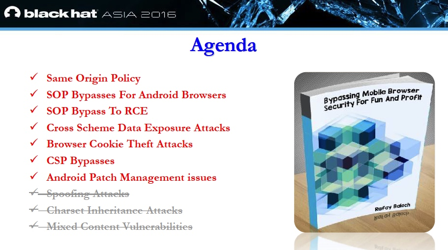
讲述Android浏览器绕过同源策略的UXSS漏洞，都是以一些历史漏洞为例讲解漏洞的利用方式（含PoC）,包括窃取cookie、读取本地文件，以及绕过Google Play的限制实现任意app的安装。==议题主要是对过去漏洞的总结，并没有太多新颖的思路。==
5、《DSCompromised: A Windows DSC Attack Framework》
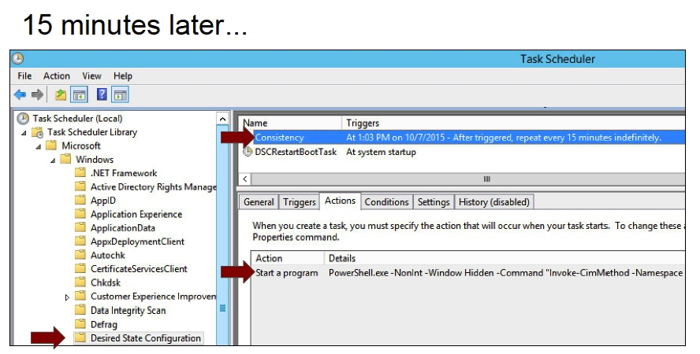
DSC（Desired State Configuration，期望状态配置）是Windows上的配置管理平台，它通过向PowerShell语言中引进一个非常简单的语法声明，和一个用来接收和应用这些配置的内置引擎来实现的。DSCompromised即是一款基于PowerShell的工具，用于借助DSC来实现命令控制、恶意软件驻留、回连后门等等功能。该工具已在github上开源：https://github.com/matthastings/DSCompromised。
6、《Enterprise Apps: Bypassing The iOS Gatekeeper》
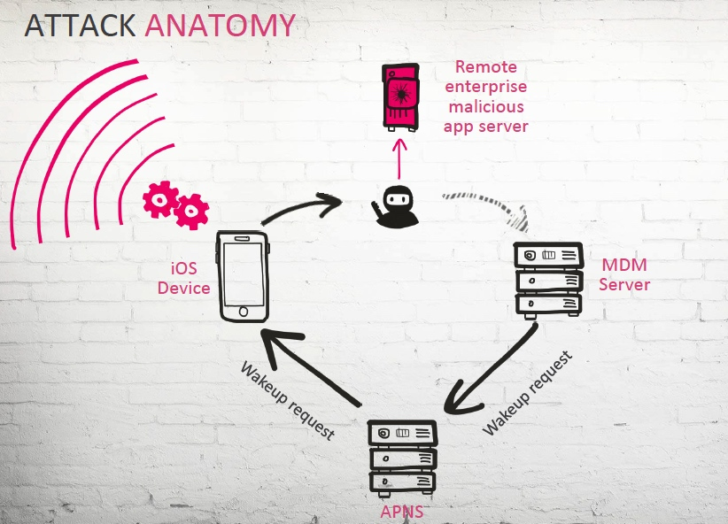
介绍iOS企业证书滥用的问题，并列举近年来出现过一些大的iOS安全事件，比如”假面攻击“、WireLurker病毒等等案例，同时讲述其它存在的风险，==比如通过中间人方式去劫持企业的移动设备管理服务器，然后替换请求安装的app，从而使得用户安装被企业证书签名过的恶意软件==。
7、《Exploiting Linux and PaX ASLR’s weaknesses on 32-bit and 64-bit systems》
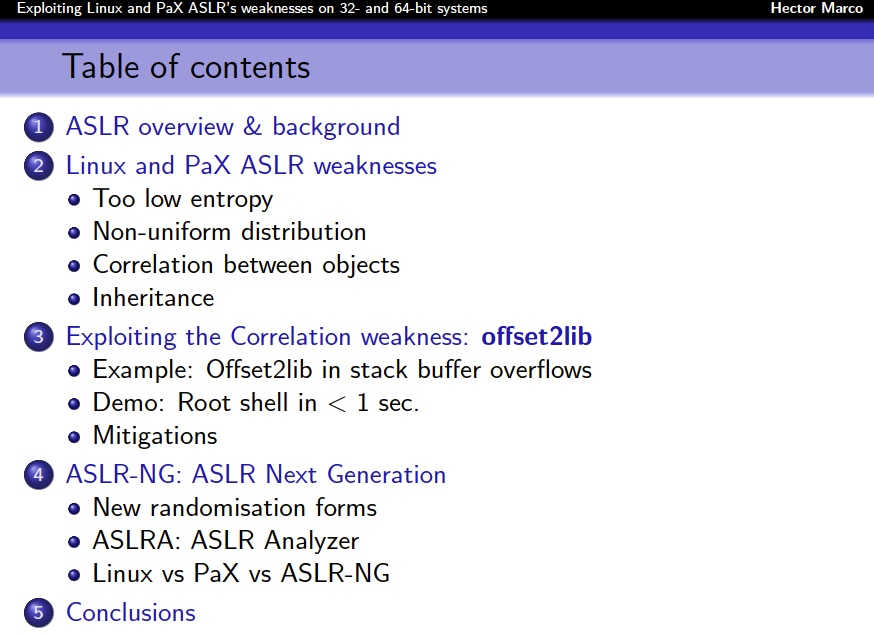
列举出当前Linux和PaX(用于安全加固的Linux内核补丁)平台上的ASLR绕过漏洞，共有4个问题：
- ==低熵==，即地址随机度不够，可被暴力破解，尤其是32位系统
- ==非均匀分布随机地址==，呈驼峰型分布，因此有部分地址存在高命中率
- ==利用对象间的相对地址偏移实现绕过==，即Offset2Lib攻击方法
- ==进程继承缺陷==，所有子进程共享相同的内存
最后提出下一代ASLR防护机制：ASLR-NG，以解决上述问题。
8、《Hacking a Professional Drone》
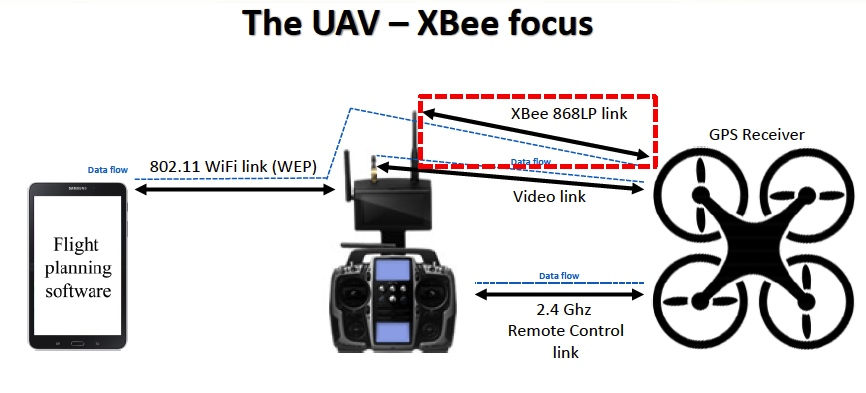
议题中提出两种攻击无人机的方法：
- ==破解WEP加密的WiFi密码==，直接接入与遥控器通讯；
- ==伪造XBee 868LP通讯设备作为中间人==，发送控制指令（逆向Android客户端获得指令序列），从而实现无人机的劫持
【PS】：==从攻击难度看，此款无人机的安全性比较低，跟大疆无人机存在较大差距==。
9、《Hey your parcel looks bad - fuzzing and exploiting parcel-ization vulnerabilities in Android》
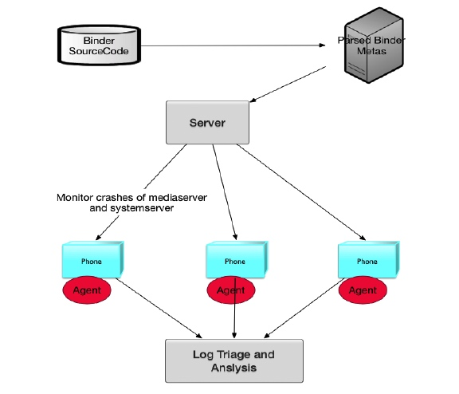
由于KeenLab分享的Android Binder Fuzzing相关的议题，分析出Binder存在的攻击面，然后制定相应的Fuzzing策略。
【亮点一】：==从Android C++源码中自动化提取各Binder服务通讯中的 Transaction Code、参数类型及序号、远程服务的调用方式，然后生成json文件，依据它来作参数变异==。如果是闭源的Binder服务，比如华为手机，则通过IDAPython从程序中提取上述信息。
【亮点二】：==开启ASAN（AddressSanitize）去编译源码==，加强程序自主的错误检测能力，同时==结合AFL==（Google开发的一款基于源码插桩的Fuzzer工具，曾被用于刷过N多CVE漏洞）去做Fuzzing，==但AFL是基于文件输入的，而Binder未提供此功能，因此KeenLab也未完全实现，这是他们一直在尝试做的工作==。
【亮点三】：最后以几个Binder服务漏洞作为实例分析漏洞成因，并分享了CVE-2015-6620 MediaCodecInfo 越界访问漏洞的利用技巧，采用ROP与Heap Spray去绕过NX与ASLR。
10、《I’m Not a Human: Breaking the Google reCAPTCHA》
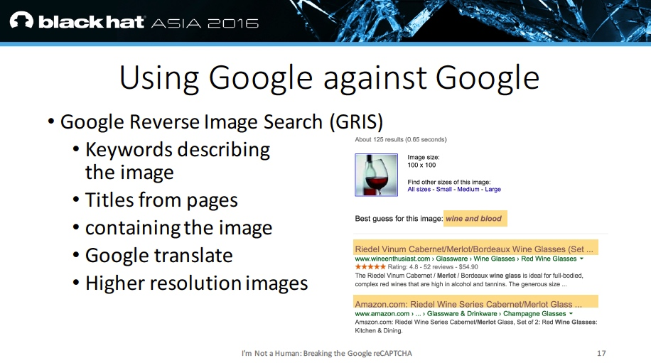
Google的reCAPTCHA是一款验证码生成系统，作者分享了一些绕过该验证码系统的方法。比如：
- 通过深度学习为图片注释，使用基于Word2Vec神经网络进行深度学习去为图片标记归类
- 收集样本图片、提示信息、注释标签等信息
- 通过Google服务（图片搜索、翻译等）获取关键词
- ……
11、《Let’s See What’s Out There - Mapping The Wireless IOT》
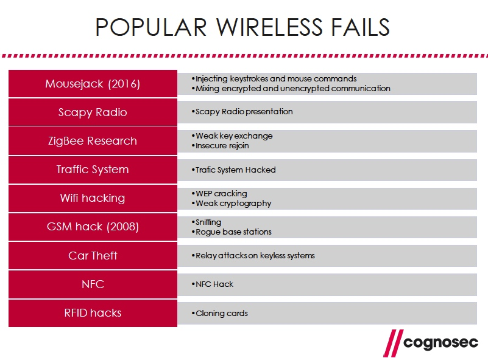
分享物联网产品中常用的无线电安全问题，比如ZigBee、WiFi、GSM、NFC、车钥匙信号等等。介绍分析无线电的硬件、软件工具，以及常见的TOP 10无线安全问题，前3名分别是：未加密通讯、信息重放攻击、密钥交换漏洞。
==【PS】:主要是无线电安全的基础知识的概述，工具和常见漏洞类型等等，无实例漏洞分析，里面涉及的内容，预研侧此前大多有分析过。==
12、《PLC-Blaster：A Worm Living Solely in the PLC》
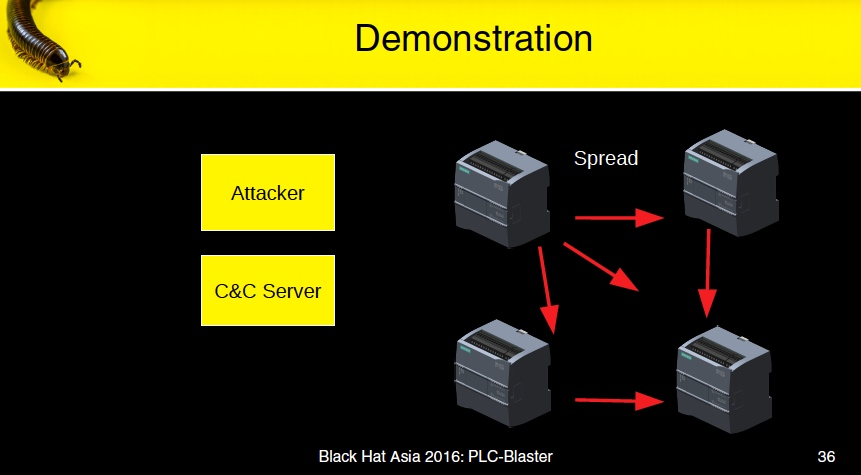
作者开发出一款叫PLC-Blaster的PLC（可编程控制器）蠕虫病毒，以西门子S7-1200版本1到3的PLC为例。西门子PLC使用自定义协议去上传和下载用户程序到PLC，也可以读取PLC相关诊断信息，因此常被用作攻击PLC的手段之一。此款PLC病毒使用SCL编程语言实现的，它会去扫描本地网络，若发现其它PLC则会上传病毒进行感染，实现自我传播的功能。同时它还会主动连接C&C服务器，以实现远程控制功能。
==【PS】：难点就在于对S7-1200 PLC的协议分析，只有分析清楚之后，才能使用SCL去实现自我传播的功能。==
13、《Practical New Developments In The BREACH Attack》
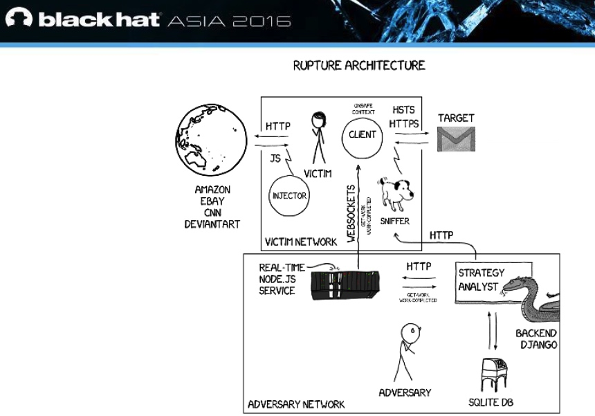
分享关于SSL BREACH（超文本自适应压缩浏览器勘测与渗透）攻击方法的新进展，BREACH攻击方法最初是在BlackHat USA 2013大会被公布的。作者开发出一款叫”rupture“的攻击框架，并在github上开源，用于实现改进后的BREACH攻击，以及针对其它压缩加密算法的攻击。
14、《The Perl Jam 2: The Camel Strikes Back》
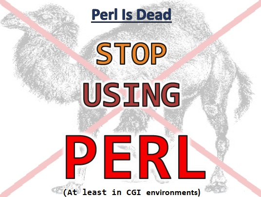
Perl在之前被发现存在多个高危漏洞，而官方一直将问题归结于开发者，作者表示很气愤，认为这个锅不应该由开发者来背。于是，作者分享了他发现的存在于perl核心模块0day漏洞，此漏洞影响所有使用perl开发CGI的程序，可造成远程代码执行。
15、《Su-A-Cyder：Homebrewing Malware For iOS Like A B0SS》
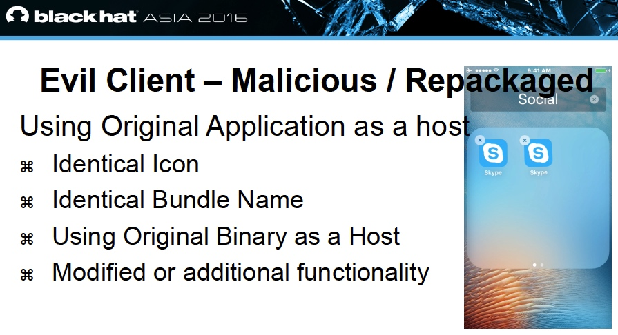
分享==非越狱iOS平台==上的恶意软件相关的议题，列举过去的发生的一些案例，然后总结出一些恶意软件的常用工具和方法：
- ==重打包==：在正常应用中加入恶意代码，然后重新签名打包
- ==Dylib注入==
- Cycript：支持javascript和OC语法的解析工具，可用于调试运行时程序，支持越狱与非越狱平台
- Theos：iOS平台上的Hook框架，支持越狱与非越狱平台，但仍需要开发者帐号用于签名，详见：====
- Fastlane tools：iOS开发的持续集成框架，用于实现实现应用发布流程的自动化。
最后作者开源出一款叫”==Su-A-Cyder==“的iOS恶意软件生成工具，后面作者还打算尝试将Metasploit移植到未越狱的iOS平台上。
16、《The Security Wolf Of Wall Street: Fighting Crime With High-Frequency Classfication And Natural Language Processing》
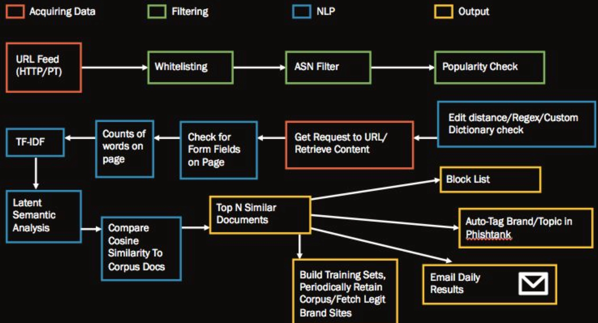
作者分享了如何利用深度学习与自然语言处理去建立一个基于实时分析海量DNS数据的威胁监控框架，主要用于检测恶意钓鱼的域名站点，并发现了不少伪造Google、Apple、Paypal等知名站点的钓鱼网站。